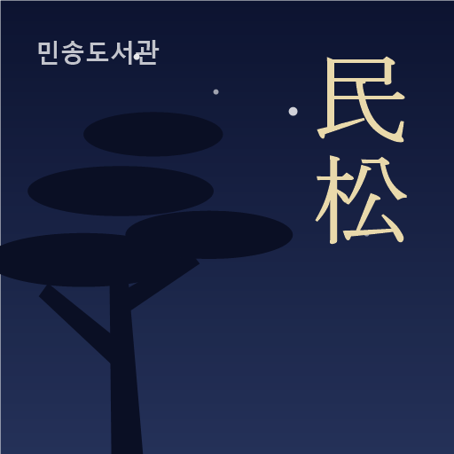
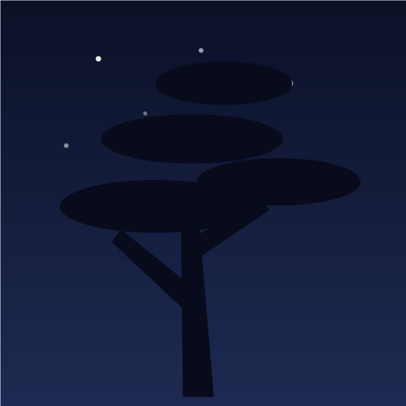
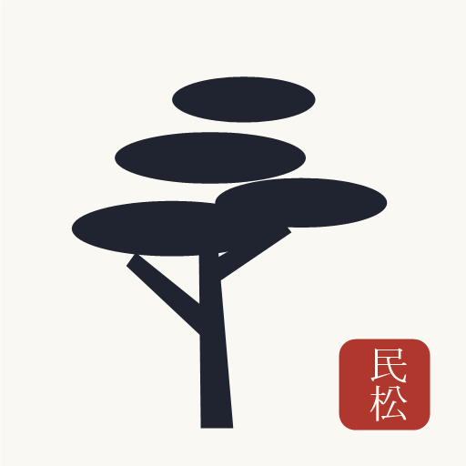
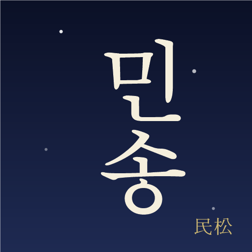
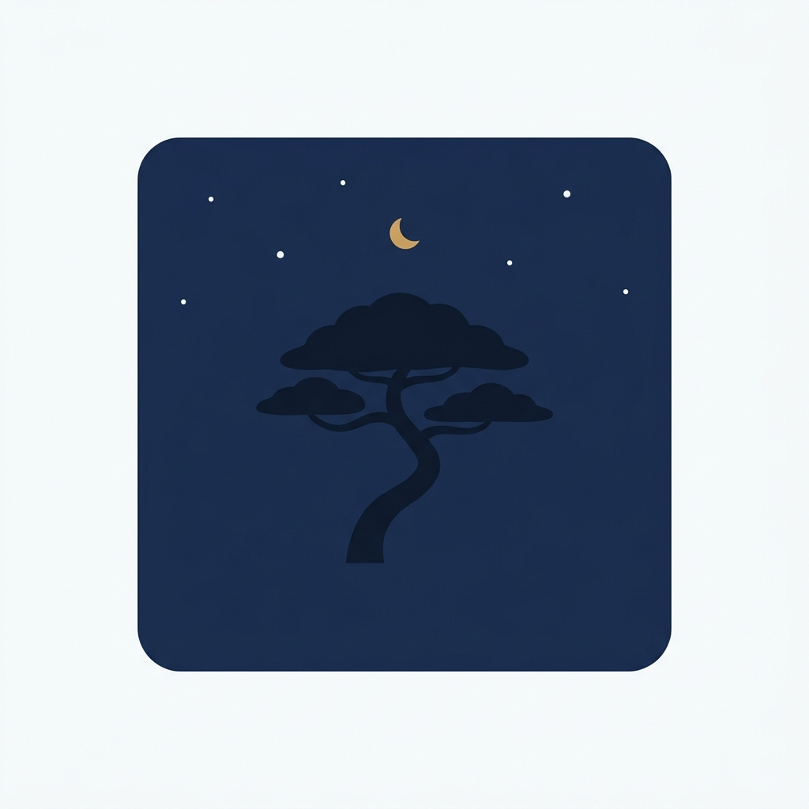
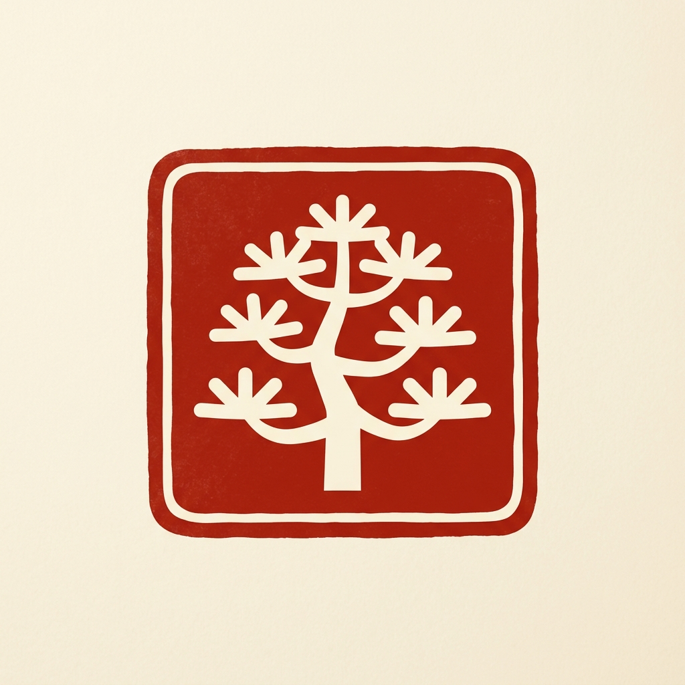
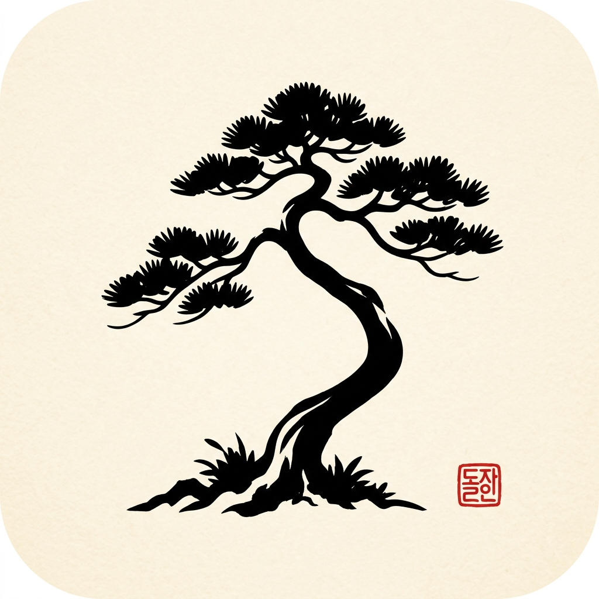
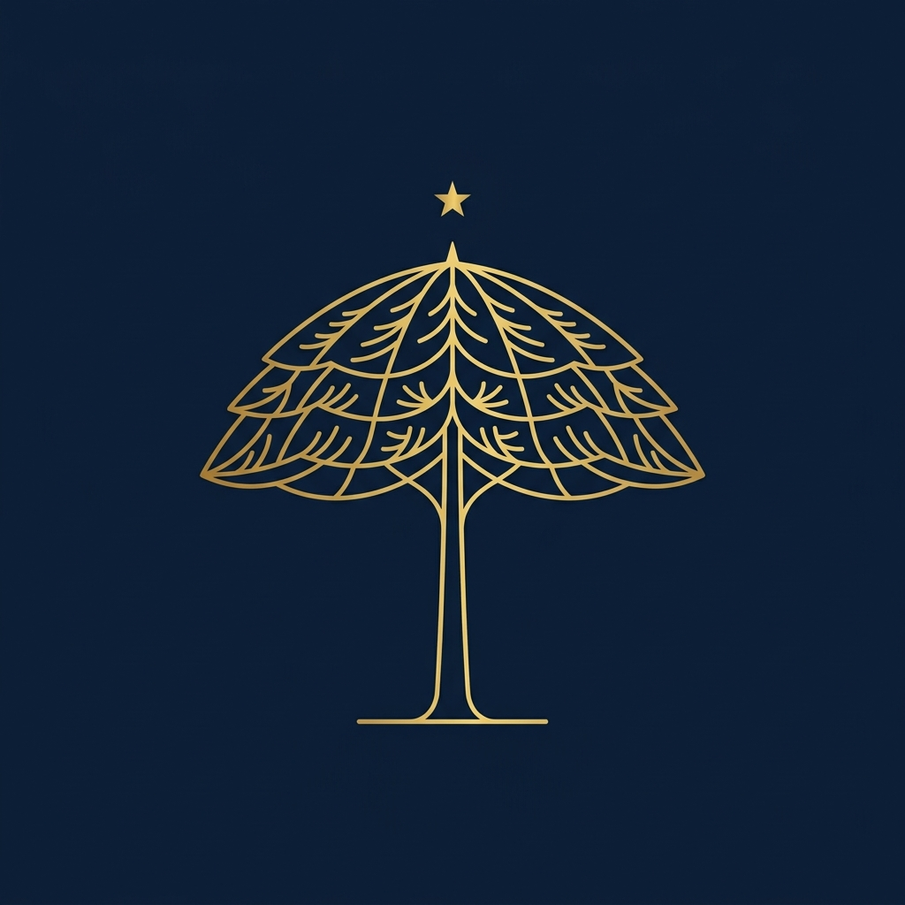
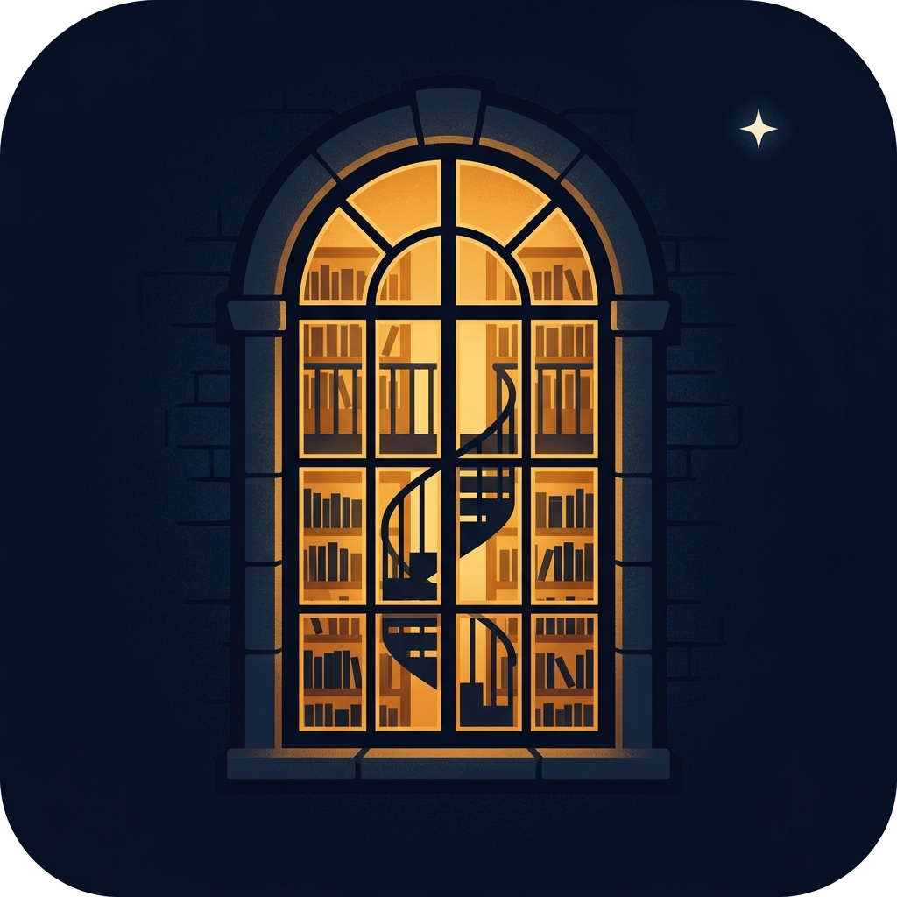
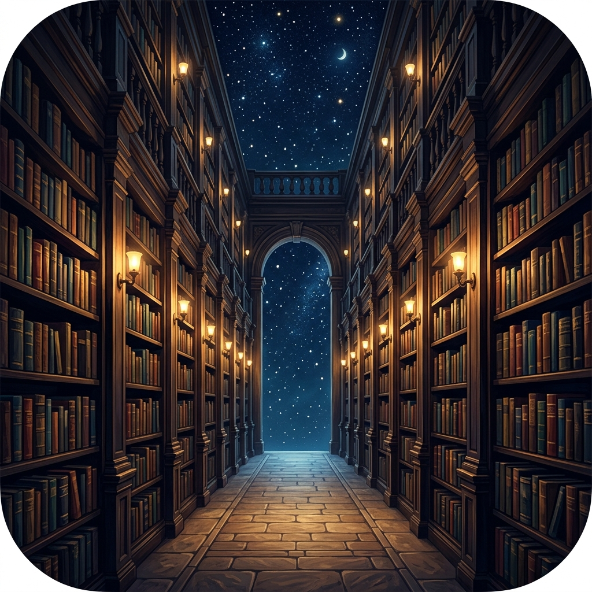

150
별마당 감성 + 民松. 요소가 셋이라 작아지면 글자가 가늘어지는 게 약점.

도서관이 책에 찍는 도장. 붉은색이라 홈 화면에서 눈에 확 띄고, 작아져도 형태가 안 무너짐.
제일 미니멀. 앱 이름이 아이콘 아래 어차피 "민송도서관"으로 붙으니 그림만으로 승부.

글자 하나만 크게. 작아져도 또렷하지만, 한자를 모르는 학생에겐 그냥 문양으로 보임.
앱 내부(참나루 크림 톤)와 같은 얼굴. 낙관 도장이 포인트. 흰 배경 폰에선 경계가 흐려질 수 있음.

모두가 읽을 수 있는 한글이 주인공. 한자는 구석에 작게. 글자 아이콘 중 가독성 최고.

미니멀 실루엣. 여백은 정본 작업에서 잘라냅니다.

도장 안이 글자 대신 소나무 문양. 작아져도 형태 유지가 가장 좋음.

수묵화 붓맛. 구석 도장의 글자가 AI가 지어낸 가짜라 — 고르시면 民松 도장으로 교체합니다.

가는 금선이 우아하지만 48px에선 선이 사라질 위험.

"책→나무" 개념은 좋은데 나무가 소나무보다 전나무에 가까움. 테두리도 제거 필요.
단청풍 기하 나무. 개성은 강한데 도서관보다 아웃도어 브랜드 느낌이 날 수 있음.
레퍼런스에 가장 가까운 직역. 파랑이라 도서관 앱들 사이에서도 또렷.
같은 문법을 앱 정체성 색(밤남색·금색)으로 — 스플래시·인증 카드와 한 가족.
블루노트 앨범 커버 문법 그대로. 영문 띠가 공식 기관 느낌을 줌.
한자·한글 어우름의 타이포판. 위 블루엔 한자, 아래 남색엔 금색 한글.
아치 창 너머 서가와 나선계단 — "밤에도 열려 있는 도서관".

지혜+밤. 금색 엠블럼.
"모든 책은 하늘의 별" — 북스타 철학 직결.
별마당 그 장면. 밝은 가운데 문 덕에 작아도 읽힘.

달 품에서 말리는 책장. 우아한 금·남색.
초록·금 방패. 전통 있는 기관 느낌.
요즘 앱 문법(반투명 유리+빛). 젊은 세대 눈에 제일 "앱답다".
한옥 창호 + 옛책 실루엣. 분위기 최고, 작아지면 격자만 남는 게 약점.